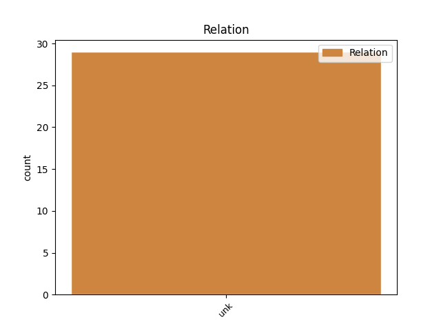
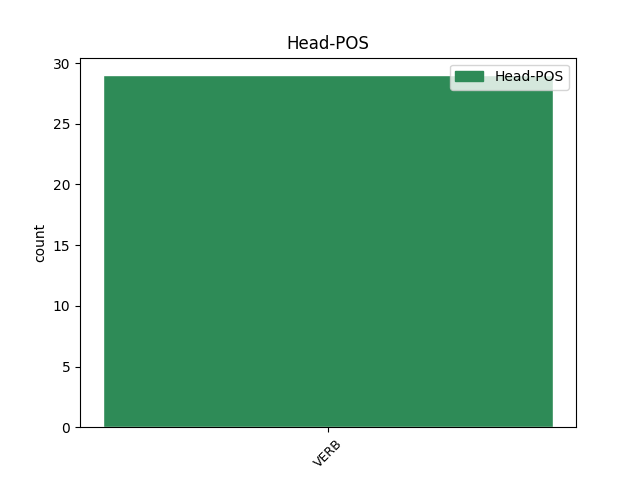
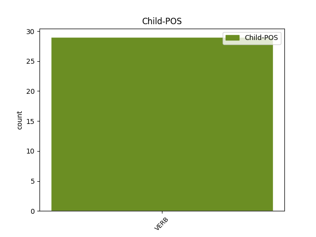

Distribution of features within this leaf



Agreement Rules sorted by frequency.
- When the dependent token is the unk(unk) of the head token, and the head token is VERB and the dependent token is VERB.
1 מרגיז _ _ _ _ 0 _ _ _
2 את_ _ _ _ _ 0 _ _ _
3 _אני _ _ _ _ 0 _ _ _
4 , _ _ _ _ 0 _ _ _
5 כאשר _ _ _ _ 0 _ _ _
6 אני _ _ _ _ 0 _ _ _
7 רואה _ VERB VERB Gender=Masc|HebBinyan=PAAL|Number=Sing|Person=1,2,3|VerbForm=Part|Voice=Act 0 _ _ _
8 את _ _ _ _ 0 _ _ _
9 ניר _ _ _ _ 0 _ _ _
10 ריכליס _ _ _ _ 0 _ _ _
11 עולה _ VERB VERB Gender=Masc|HebBinyan=PAAL|HebSource=ConvUncertainHead|Number=Sing|Person=1,2,3|VerbForm=Part|Voice=Act 7 unk _ _
12 ל _ _ _ _ 0 _ _ _
13 כמה _ _ _ _ 0 _ _ _
14 דקות _ _ _ _ 0 _ _ _
15 , _ _ _ _ 0 _ _ _
16 עושה _ _ _ _ 0 _ _ _
17 שגיאה _ _ _ _ 0 _ _ _
18 , _ _ _ _ 0 _ _ _
19 ו _ _ _ _ 0 _ _ _
20 מיד _ _ _ _ 0 _ _ _
21 יורד _ _ _ _ 0 _ _ _
22 ל _ _ _ _ 0 _ _ _
23 ה_ _ _ _ _ 0 _ _ _
24 ספסל _ _ _ _ 0 _ _ _
25 . _ _ _ _ 0 _ _ _
Disagree Examples:
1 כהנא _ _ _ _ 0 _ _ _
2 ניסה _ _ _ _ 0 _ _ _
3 ב _ _ _ _ 0 _ _ _
4 שעה_ _ _ _ _ 0 _ _ _
5 _של_ _ _ _ _ 0 _ _ _
6 _הוא _ _ _ _ 0 _ _ _
7 להתגורר _ _ _ _ 0 _ _ _
8 ב _ _ _ _ 0 _ _ _
9 קריית _ _ _ _ 0 _ _ _
10 - _ _ _ _ 0 _ _ _
11 ארבע _ _ _ _ 0 _ _ _
12 ו _ _ _ _ 0 _ _ _
13 הותיר הותיר VERB VERB Gender=Masc|HebBinyan=HIFIL|Number=Sing|Person=3|Tense=Past|Voice=Act 0 _ _ _
14 שם _ _ _ _ 0 _ _ _
15 רבים רב VERB VERB Gender=Masc|HebBinyan=PAAL|Number=Plur|Person=1,2,3|VerbForm=Part|Voice=Act 13 unk _ _
16 מ _ _ _ _ 0 _ _ _
17 חסיד_ _ _ _ _ 0 _ _ _
18 _של_ _ _ _ _ 0 _ _ _
19 _הוא _ _ _ _ 0 _ _ _
20 . _ _ _ _ 0 _ _ _
1 מדוע _ _ _ _ 0 _ _ _
2 זכה זכה VERB VERB Gender=Masc|HebBinyan=PAAL|Number=Sing|Person=3|Tense=Past|Voice=Act 0 _ _ _
3 נושא _ _ _ _ 0 _ _ _
4 זה _ _ _ _ 0 _ _ _
5 ל _ _ _ _ 0 _ _ _
6 תחייה _ _ _ _ 0 _ _ _
7 , _ _ _ _ 0 _ _ _
8 זאת _ _ _ _ 0 _ _ _
9 לא _ _ _ _ 0 _ _ _
10 אבין הבין VERB VERB Gender=Fem,Masc|HebBinyan=HIFIL|HebSource=ConvUncertainHead|Number=Sing|Person=1|Tense=Fut|Voice=Act 2 unk _ SpaceAfter=No
11 . _ _ _ _ 0 _ _ _
1 מתעמלות התעמל VERB VERB Definite=Cons|Gender=Fem|HebBinyan=HITPAEL|Number=Plur|Person=1,2,3|VerbForm=Part 7 unk _ _
2 ה _ _ _ _ 0 _ _ _
3 פועל _ _ _ _ 0 _ _ _
4 ראשון _ _ _ _ 0 _ _ _
5 ל _ _ _ _ 0 _ _ _
6 ציון _ _ _ _ 0 _ _ _
7 זכו זכה VERB VERB Gender=Fem,Masc|HebBinyan=PAAL|Number=Plur|Person=3|Tense=Past|Voice=Act 0 _ _ _
8 ב _ _ _ _ 0 _ _ _
9 גביע _ _ _ _ 0 _ _ _
10 ה _ _ _ _ 0 _ _ _
11 איגוד _ _ _ _ 0 _ _ _
12 ל _ _ _ _ 0 _ _ _
13 ה_ _ _ _ _ 0 _ _ _
14 גילאים _ _ _ _ 0 _ _ _
15 ה _ _ _ _ 0 _ _ _
16 צעירים _ _ _ _ 0 _ _ _
17 , _ _ _ _ 0 _ _ _
18 לפני _ _ _ _ 0 _ _ _
19 עמק _ _ _ _ 0 _ _ _
20 חפר _ _ _ _ 0 _ _ _
21 . _ _ _ _ 0 _ _ _
1 מי _ _ _ _ 0 _ _ _
2 ש _ _ _ _ 0 _ _ _
3 התרשם _ _ _ _ 0 _ _ _
4 מ _ _ _ _ 0 _ _ _
5 רעננות_ _ _ _ _ 0 _ _ _
6 _של_ _ _ _ _ 0 _ _ _
7 _הוא _ _ _ _ 0 _ _ _
8 של _ _ _ _ 0 _ _ _
9 ה _ _ _ _ 0 _ _ _
10 הדס _ _ _ _ 0 _ _ _
11 , _ _ _ _ 0 _ _ _
12 כדאי _ _ _ _ 0 _ _ _
13 ל_ _ _ _ _ 0 _ _ _
14 _הוא _ _ _ _ 0 _ _ _
15 לזכור _ _ _ _ 0 _ _ _
16 מראה _ _ _ _ 0 _ _ _
17 זה _ _ _ _ 0 _ _ _
18 גם _ _ _ _ 0 _ _ _
19 ב _ _ _ _ 0 _ _ _
20 שינה_ _ _ _ _ 0 _ _ _
21 _של_ _ _ _ _ 0 _ _ _
22 _הוא _ _ _ _ 0 _ _ _
23 , _ _ _ _ 0 _ _ _
24 כ _ _ _ _ 0 _ _ _
25 ה_ _ _ _ _ 0 _ _ _
26 כתוב _ _ _ _ 0 _ _ _
27 : _ _ _ _ 0 _ _ _
28 " _ _ _ _ 0 _ _ _
29 ה _ _ _ _ 0 _ _ _
30 רואה ראה VERB VERB Gender=Masc|HebBinyan=PAAL|Number=Sing|Person=1,2,3|VerbForm=Part|Voice=Act 0 _ _ _
31 הדס _ _ _ _ 0 _ _ _
32 ב _ _ _ _ 0 _ _ _
33 ה_ _ _ _ _ 0 _ _ _
34 חלום _ _ _ _ 0 _ _ _
35 , _ _ _ _ 0 _ _ _
36 נכס_ _ _ _ _ 0 _ _ _
37 _של_ _ _ _ _ 0 _ _ _
38 _הוא _ _ _ _ 0 _ _ _
39 מצליחין הצליח VERB VERB Gender=Masc|HebBinyan=HIFIL|HebSource=ConvUncertainHead|Number=Plur|Person=1|VerbForm=Part|Voice=Act 30 unk _ _
40 ל_ _ _ _ _ 0 _ _ _
41 _הוא _ _ _ _ 0 _ _ _
42 , _ _ _ _ 0 _ _ _
43 ו _ _ _ _ 0 _ _ _
44 אם _ _ _ _ 0 _ _ _
45 אין _ _ _ _ 0 _ _ _
46 ל_ _ _ _ _ 0 _ _ _
47 _הוא _ _ _ _ 0 _ _ _
48 נכסים _ _ _ _ 0 _ _ _
49 ירושה _ _ _ _ 0 _ _ _
50 נופלת _ _ _ _ 0 _ _ _
51 ל_ _ _ _ _ 0 _ _ _
52 _הוא _ _ _ _ 0 _ _ _
53 מ _ _ _ _ 0 _ _ _
54 מקום _ _ _ _ 0 _ _ _
55 אחר _ _ _ _ 0 _ _ _
56 " _ _ _ _ 0 _ _ _
57 . _ _ _ _ 0 _ _ _
1 ה _ _ _ _ 0 _ _ _
2 ניצחון _ _ _ _ 0 _ _ _
3 ה _ _ _ _ 0 _ _ _
4 ביתי _ _ _ _ 0 _ _ _
5 של _ _ _ _ 0 _ _ _
6 סמפדוריה _ _ _ _ 0 _ _ _
7 על _ _ _ _ 0 _ _ _
8 פיזה _ _ _ _ 0 _ _ _
9 , _ _ _ _ 0 _ _ _
10 היה _ _ _ _ 0 _ _ _
11 מתוק _ _ _ _ 0 _ _ _
12 ל _ _ _ _ 0 _ _ _
13 ה_ _ _ _ _ 0 _ _ _
14 מאמן _ _ _ _ 0 _ _ _
15 ה _ _ _ _ 0 _ _ _
16 יוגוסלווי _ _ _ _ 0 _ _ _
17 וידאן _ _ _ _ 0 _ _ _
18 בושקוב _ _ _ _ 0 _ _ _
19 , _ _ _ _ 0 _ _ _
20 אשר _ _ _ _ 0 _ _ _
21 לא _ _ _ _ 0 _ _ _
22 רק _ _ _ _ 0 _ _ _
23 החזיר _ _ _ _ 0 _ _ _
24 את _ _ _ _ 0 _ _ _
25 ויאלי _ _ _ _ 0 _ _ _
26 ל _ _ _ _ 0 _ _ _
27 ה_ _ _ _ _ 0 _ _ _
28 הרכב _ _ _ _ 0 _ _ _
29 , _ _ _ _ 0 _ _ _
30 לאחר _ _ _ _ 0 _ _ _
31 פציעה_ _ _ _ _ 0 _ _ _
32 _של_ _ _ _ _ 0 _ _ _
33 _הוא _ _ _ _ 0 _ _ _
34 של _ _ _ _ 0 _ _ _
35 ה _ _ _ _ 0 _ _ _
36 כדורגלן _ _ _ _ 0 _ _ _
37 ב _ _ _ _ 0 _ _ _
38 ספטמבר _ _ _ _ 0 _ _ _
39 , _ _ _ _ 0 _ _ _
40 אלא _ _ _ _ 0 _ _ _
41 גם _ _ _ _ 0 _ _ _
42 ראה ראה VERB VERB Gender=Masc|HebBinyan=PAAL|Number=Sing|Person=3|Tense=Past|Voice=Act 0 _ _ _
43 את_ _ _ _ _ 0 _ _ _
44 _הוא _ _ _ _ 0 _ _ _
45 מבקיע הבקיע VERB VERB Gender=Masc|HebBinyan=HIFIL|HebSource=ConvUncertainHead|Number=Sing|Person=1,2,3|VerbForm=Part|Voice=Act 42 unk _ _
46 את _ _ _ _ 0 _ _ _
47 ה _ _ _ _ 0 _ _ _
48 שער _ _ _ _ 0 _ _ _
49 ה _ _ _ _ 0 _ _ _
50 שלישי _ _ _ _ 0 _ _ _
51 . _ _ _ _ 0 _ _ _